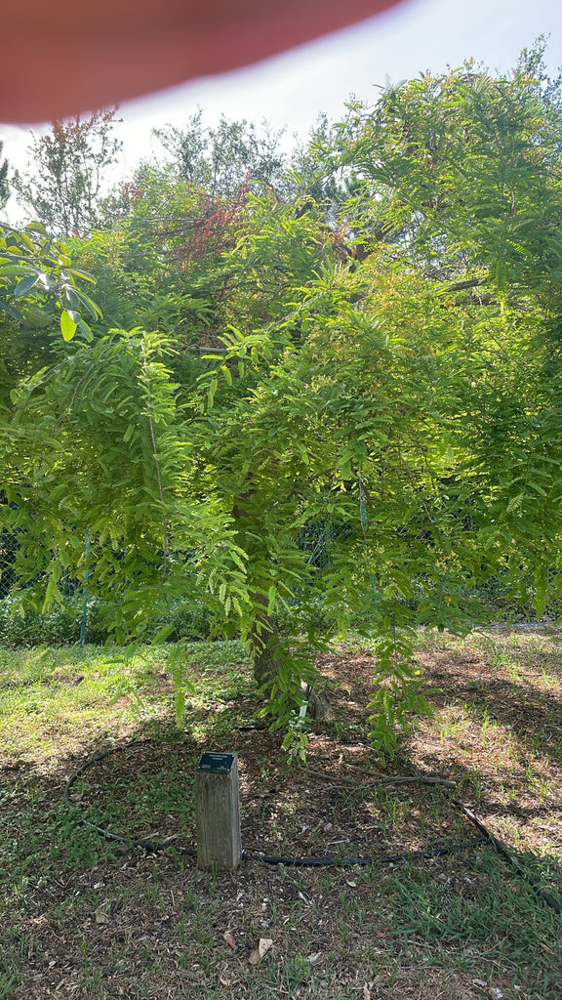

- This tree stands in complete evolutionary isolation. It is a monotypic genus — the sole species in all of Tamarindus — with no close living relatives on Earth.
- Compounding that lonely status is a historic naming blunder: Arab traders who found it flourishing in India called it 'tamar hindi' (Indian date), which led Linnaeus to publish it in 1753 as indica — of India — forever masking its true origin in the dry savannas of tropical Africa.
- The pulp inside the pod is one of the richest natural sources of tartaric acid of any fruit in the world — the same compound that makes grapes toxic to dogs, present here at concentrations roughly ten to fifty times higher than in grapes. People eat it freely; dogs should not.
- It outright breaks the engineering rules of the pea family (Fabaceae). While its relatives typically produce thin-walled pods that split cleanly along two seams to drop their seeds, tamarind produces a completely indehiscent, armored pod.
- The brittle, cinnamon-brown shell refuses to split on its own, locking its seeds inside a dense, sticky matrix of acidic pulp that can hang in the canopy for months.
- A well-tended tamarind tree can bear fruit for 60 or more productive years, and some individual trees are estimated to live 200 years or longer.
Tamarind is native to the seasonally dry savannas of tropical Africa — specifically the Sudanian belt stretching from Sudan and Ethiopia westward through sub-Sahelian West Africa. It was carried into South Asia so early in human history that by the time Arab traders and, later, European botanists encountered it, it had been a fixture of Indian cuisine and medicine for millennia.
That long presence in India fooled everyone for centuries. Arab traders named it 'tamar hindi' (Indian date), and when Linnaeus formally described it in 1753 he worked from Indian specimens, giving the tree the species epithet indica — of India. The name stuck even after botanists confirmed an African origin.
Tamarind arrived in the Americas during the colonial period and is now grown throughout the Caribbean and South Florida, both as a fruiting tree and as an ornamental shade tree. UF/IFAS recommends it for frost-free areas of Florida and rates it as not a problem species for Florida's natural areas.
- Tamarindus indica is a monotypic genus: the sole species in the entire genus Tamarindus, with no close living relatives at the genus level. Its exact placement within the subfamily Caesalpinioideae (Fabaceae) is still being refined by molecular studies.
- The pods are botanically unusual for a legume. Most members of Fabaceae produce thin-walled pods that split open along two seams to release seeds — the classic pea or bean pod. Tamarind produces an indehiscent pod: the brittle shell does not split on its own, and the pulp clings tightly to the seeds in a dense, fibrous mass. The pods can hang on the tree for months after maturity without dropping.
- Tamarind is one of the few trees that is both genuinely drought-tolerant and reliably wind-resistant. UF/IFAS notes that its twigs and branches hold up exceptionally well in breezy conditions, making it one of the more sensible shade-tree choices for Florida's hurricane-prone coastal counties — though it performs best kept away from the immediate shoreline, as it has low salt tolerance.
The summer flowers — cream to pale yellow with red veins, borne in small drooping racemes — attract bees and other nectar-seeking insects. The tree is self-fertile, meaning a single specimen can set fruit without a separate pollen source nearby.
The ripe pods, hanging through late winter and spring, are taken by birds and small mammals. In its native African range and throughout its pantropical cultivated range, tamarind is a known food source for fruit bats, parrots, and a variety of frugivorous birds.
No documented larval host relationship with Florida butterflies has been established, but the dense, spreading canopy offers useful roosting and foraging structure for birds year-round.
Small and fragrant, borne in short drooping racemes of three to twelve flowers. Each flower has four reflexed sepals (red on the outside, greenish-white inside) and five petals of unequal length, cream to pale yellow and laced with red veins. Blooms appear in summer, typically emerging from the tips of new growth.
A hard, brown, irregularly curved pod two to six inches long with a brittle outer shell. Inside, a sticky, fibrous, dark-brown pulp clings to one to ten glossy, hard, angular seeds. The pulp is edible and widely used in cooking. Pods ripen in late winter to spring in Florida — typically February through May — and can remain on the tree for months.
Even-pinnate compound leaves, six to ten inches long, each made up of ten to eighteen pairs of small, oblong leaflets roughly half an inch long. The leaflets are light green, smooth, and closely spaced, giving the whole leaf a fine, feathery texture. Leaves fold up at night. The tree is evergreen under reliable moisture but may drop leaves briefly during prolonged drought.
Typically grows with a single trunk (though it tends toward multiple trunks if not pruned when young) topped by a broad, dome-shaped, wide-spreading crown with drooping branch tips. Bark is gray-brown to nearly black, rough, and marked by vertical fissures and horizontal cracks. The trunk can reach impressive girth in old specimens.
Approach with a three-step observational sequence. First, read the canopy: despite the tree's size, the dome appears remarkably light and airy — the even-pinnate leaves carry paired leaflets so fine they look more like a fern frond than the foliage of a large shade tree. Visit at dusk and watch those leaflets fold tightly together in their nightly sleep movement.
Second, scan the branch tips for the season's evidence: in summer, look for small drooping clusters of cream-colored flowers traced with vivid red veins; from late winter into spring, look for heavy, curved brown pods that rattle faintly when mature.
Third, inspect the main trunk up close: older trees develop a deeply fissured, nearly charcoal-gray bark that quietly reveals the slow, decades-long accumulation of this resilient canopy giant.
Keep dogs away from fallen pods and pulp. Tamarind is one of the highest natural sources of tartaric acid of any fruit — the same compound responsible for grape and raisin toxicity in dogs, present here at concentrations many times higher. Ingestion of even a moderate number of pods can cause acute kidney injury in dogs; veterinary sources treat it as a genuine emergency.
The fruit is perfectly safe for people: the pulp is widely eaten around the world and has a long culinary history. No toxicity concerns for humans from normal handling or consumption.
Tamarind pulp is an ingredient in Worcestershire sauce — one of those facts that surprises most people who have been using the condiment for years.
Young trees should be pruned early to develop a single central leader; left alone, the species readily forms multiple trunks with included bark at the crotches, which can become a structural liability on a large specimen.


- © Zailibeth Perez (CC-BY-NC), via iNaturalist
- © Maria Escobar (CC-BY-NC), via iNaturalist